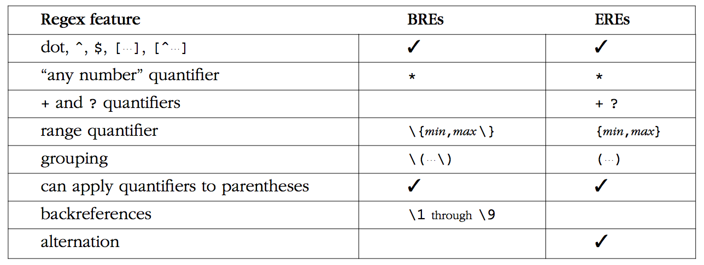
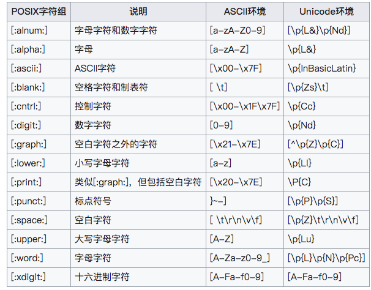

一直以来，从JavaScript，PHP，Python到Golang，然后还有linux系统中，无处不见正则表达式的身影，可是一致困扰在POSIX和PCRE的概念中，
傻傻分不清这两个是个啥，今天就来翻翻正则表达式的老底，了解了解正则表达式的前世今生。
本文均是对这两篇文章的整理总结，方便自己记忆；
Regular Expression的“Regular”一般被译为“正则”、“正规”、“常规”。此处的“Regular”即是“规则”、“规律”的意思，Regular Expression即“描述某种规则的表达式”之意。
正则表达式，又称正规表示式、正规表示法、正规表达式、规则表达式、常规表示法（英语：Regular Expression，在代码中常简写为regex、regexp或RE），是计算机科学的一个概念。正则表达式使用单个字符串来描述、匹配一系列匹配某个句法规则的字符串。在很多文本编辑器里，正则表达式通常被用来检索、替换那些匹配某个模式的文本。
许多程序设计语言都支持利用正则表达式进行字符串操作。例如，在Perl中就内建了一个功能强大的正则表达式引擎。正则表达式这个概念最初是由Unix中的工具软件（例如sed和grep）普及开的。正则表达式通常缩写成regex，单数有regexp、regex，复数有regexps、regexes、regexen。
历史
正则表示式这一概念最早可以追溯到20世纪40年代的两个神经物理学家Warren McCulloch与Walter Pitts，他们将神经系统中的神经元描述成小而简单的自动控制元；
紧接着，在50年代，数学家1950年代，数学家Stephen Kleene利用称之为正则集合的数学符号来描述此模型，并且建议使用一个简单的概念来表示，
于是regular expressions就正式登上历史舞台了。
1968年，Ken Thompson发表了Regular Expression Search Algorithm, 紧接着
大神Thompson根据这个论文实现了Unix上编辑器ed的前身qed。ed所支持的正则表示式并不比qed的高级，
但是ed是第一个在非技术圈广泛传播的工具，ed有一个命令可以展示文本中符合给定正则表达式的行，这个命令是g/Regular Expression/p，在英文中读作Global Regular Expression Print，由于这个命令非常实用，所以后来有了grep、egrep这两个命令。
相比egrep，grep只支持很少的元符号，＊是支持的（但不能用于分组中），但是+、|与?是不支持的；而且，分组时需要加上反斜线转义，像\( ...\)这样才行，
由于grep的缺陷性日渐明显，AT&T的Alfred Aho实在受不了了，于是egrep诞生了，这里的e表示extended，加强版的意思，支持了+、|与?这三个元符号，
并且可以在分组中使用*，分组可以直接写成(...)，同时用\1,\2...来引用分组。
在grep、egrep发展的同时，awk、lex、sed等程序也开始发展起来，而且每个程序所支持的正则表达式都或多或少的和其他的不一样，这应该算是正则表达式发展的混乱期，
因为这些程序在不断的发展过程中，有时新增加的功能因为bug原因，在后期的版本中取消了该功能，例如，如果让grep支持元符号+的话，那么grep就不能表示字符+了，
而且grep的老用户会对这很反感。
这种门派自居的时代混乱不堪，总得有人来统一吧。到了1986年，这个人终于来了，他就是POSIX(Portable Operating System Interface)标准，POSIX制定了不同
操作系统之间都需要遵守的一套规则。当然了，正则表达式也包括其中，终于来个管事的，POSIX规范分为基本正则表达式BRE(Basic Regular Expressions)和扩展正则表达式ERE(Extended Regular Express，ERE)两个流派，所有的POSIX程序可以选择支持其中的一种，具体规范详见下表：

从上图可以看出，有三个空白栏，那么是不是就意味这无法使用该功能了呢？答案是否定的，因为我们现在使用的linux发行版，都是集成GNU套件的，GNU是Gnu’s Not Unix的缩写，GNU在实现了POXIS标准的同时，做了一定的扩展，所以上面空白栏中的功能也能使用。下面一一讲解：
- BRE如何使用
+、?呢？需要用\+、\? - BRE如何使用
|呢？需要用\| - ERE如何使用
\1、\2…\9这样的反引用？和BRE一样，就是\1、\2…\9
通过上面总结，可以发现：GNU中的ERE与BRE的功能相同，只是语法不同（BRE需要用\进行转义，才能表示特殊含义）。例如a{1,2}，在ERE表示的是a或aa，
在BRE中表示的是a{1,2}这个字符串。为了能够在Linux下熟练使用文本处理工具，我们必须知道这些命令支持那种正则表达式。现对常见的命令总结如下：
- 使用BRE语法的命令有：
grep、ed、sed、vim - 使用ERE语法的命令有：
egrep、awk、emacs
当然，这也不是绝对的，比如 sed 通过-r选项就可以使用ERE了，大家到时自己man一下就可以了。
还值得一提的是POSIX还定义了一些shorthand，具体如下：
[:alnum:][:alpha:][:cntrl:][:digit:][:graph:][:lower:][:print:][:punct:][:space:][:upper:][:xdigit:]
在使用这些shorthand时有一个约束：必须在[]中使用，也就是说如果像匹配0-9的数字，需要这么写[[:alnum:]]，取反就是[^[:alnum:]]。
shorhand 在BRE与EBE中的用法相同。
如果你对sed、awk比较熟悉，你会发现我们平常在变成语言中用的\d、\w在这些命令中不能用，原因很简单，
因为POSIX规范根本没有定义这些shorthand，这些是由下面将要说的PCRE中定义的。
除了POSIX标准外，还有一个Perl分支，也就是我们现在熟知的PCRE（Perl兼容正则表达式，Perl Compatible Regular Expressions)，源自于Henry Spencer于1986年1月19日发布的regex，随着Perl语言的发展，Perl语言中的正则表达式功能越来越强悍，为了把Perl语言中正则的功能移植到其他语言中，PCRE就诞生了。现在的编程语言中的正则表达式，大部分都属于PCRE这个分支。
Perl语言第一版是由Larry Wall发布于1987年12月，Perl在发布之初，就因其强大的功能而一票走红，Perl的定位目标就是“天天要使用的工具”。
Perl比较显诸特征之一是与sed与awk兼容，这造就了Perl成为第一个通用性脚本语言。
随着Perl的不断发展，其支持的正则表达式的功能也越来越强大。其中影响较大的是于1994年10月发布的Perl 5，其增加了很多特性，比如non-capturing parentheses、lazy quantifiers、look-ahead、元符号\G等等。
正好这时也是WWW兴起的时候，而Perl就是为了文本处理而发明的，所以Perl基本上成了web开发的首选语言。Perl语言应用是如此广泛，以至于其他语言开始移植Perl，
最终Perl compatible（兼容）的PCRE诞生了，这其中包括了Tcl, Python, Microsoft’s .NET , Ruby, PHP, C/C++, Java等等。
前面说了shorthand在POSIX与PCRE是不同的，PCRE中我们常用的有如下这些：
\w表示[a-zA-Z]\W表示[^a-zA-Z]\s表示[ \t\r\n\f]\S表示[^ \t\r\n\f]\d表示[1-9]\D表示[^1-9]\<表示一个单词的起始\>表示一个单词的结尾
PCRE表达式全集
\, 将下一个字符标记为一个特殊字符(File Format Escape)、或一个原义字符（Identity Escape，有^$()*+?.[\{|共计12个)、或一个向后引用(backreferences)、或一个八进制转义符。例如，n匹配字符n。\n匹配一个换行符。序列\\匹配\而\(则匹配(。^, 匹配输入字符串的开始位置。如果设置了RegExp对象的Multiline属性，^也匹配\n或\r之后的位置。也匹配
\n或\r之前的位置。*, 匹配前面的子表达式零次或多次。例如，zo*能匹配z、zo以及zoo。*等价于{0,}。+, 匹配前面的子表达式一次或多次。例如，zo+能匹配zo以及zoo，但不能匹配z。+等价于{1,}。?, 匹配前面的子表达式零次或一次。例如，do(es)?可以匹配do或does中的do。?等价于{0,1}。{n},n是一个非负整数。匹配确定的n次。例如，o{2}不能匹配Bob中的o，但是能匹配food中的两个o。{n,}, n是一个非负整数。至少匹配n次。例如，o{2,}不能匹配Bob中的o，但能匹配foooood中的所有o。o{1,}等价于o+。o{0,}则等价于o*。{m,n},m和n均为非负整数，其中n<=m。最少匹配n次且最多匹配m次。例如，o{1,3}将匹配fooooood中的前三个o。o{0,1}等价于o?。请注意在逗号和两个数之间不能有空格。?, 非贪心量化（Non-greedy quantifiers）：当该字符紧跟在任何一个其他重复修饰符（*,+,?，{n}，{n,}，{n,m}）后面时，匹配模式是非贪婪的。非贪婪模式尽可能少的匹配所搜索的字符串，而默认的贪婪模式则尽可能多的匹配所搜索的字符串。例如，对于字符串oooo，o+?将匹配单个o，而o+将匹配所有o。., 匹配除\r\n之外的任何单个字符。要匹配包括\r\n在内的任何字符，请使用像(.|\r|\n)的模式。(pattern), 匹配pattern并获取这一匹配的子字符串。该子字符串用于向后引用。所获取的匹配可以从产生的Matches集合得到，在VBScript中使用SubMatches集合，在JScript中则使用$0…$9属性。要匹配圆括号字符，请使用\(或\)。(?:pattern), 匹配pattern但不获取匹配的子字符串，也就是说这是一个非获取匹配，不存储匹配的子字符串用于向后引用。这在使用或字符(|)来组合一个模式的各个部分是很有用。例如industr(?:y|ies)就是一个比industry|industries更简略的表达式。(?=pattern), 正向肯定预查（look ahead positive assert），在任何匹配pattern的字符串开始处匹配查找字符串。这是一个非获取匹配，也就是说，该匹配不需要获取供以后使用。例如，Windows(?=95|98|NT|2000)能匹配Windows2000中的Windows，但不能匹配Windows3.1中的Windows。预查不消耗字符，也就是说，在一个匹配发生后，在最后一次匹配之后立即开始下一次匹配的搜索，而不是从包含预查的字符之后开始。(?!pattern), 正向否定预查(negative assert)，在任何不匹配pattern的字符串开始处匹配查找字符串。这是一个非获取匹配，也就是说，该匹配不需要获取供以后使用。例如Windows(?!95|98|NT|2000)能匹配Windows3.1中的Windows，但不能匹配Windows2000中的Windows。预查不消耗字符，也就是说，在一个匹配发生后，在最后一次匹配之后立即开始下一次匹配的搜索，而不是从包含预查的字符之后开始。(?<=pattern), 反向(look behind)肯定预查，与正向肯定预查类似，只是方向相反。例如，(?<=95|98|NT|2000)Windows能匹配2000Windows中的Windows，但不能匹配3.1Windows中的Windows。(?<!pattern), 反向否定预查，与正向否定预查类似，只是方向相反。例如(?<!95|98|NT|2000)Windows能匹配3.1Windows中的Windows，但不能匹配2000Windows中的Windows。x|y, 匹配x或y。例如，z|food能匹配z或food。(?:z|f)ood则匹配zood或food。[xyz], 字符集合（character class）。匹配所包含的任意一个字符。例如，[abc]可以匹配plain中的a。特殊字符仅有反斜线\保持特殊含义，用于转义字符。其它特殊字符如*、+、各种括号等均作为普通字符。脱字符^如果出现在首位则表示负值字符集合；如果出现在字符串中间就仅作为普通字符。连字符-如果出现在字符串中间表示字符范围描述；如果如果出现在首位（或末尾）则仅作为普通字符。右方括号应转义出现，也可以作为首位字符出现。[^xyz], 排除型字符集合（negated character classes）。匹配未列出的任意字符。例如，[^abc]可以匹配plain中的plin。[a-z], 字符范围。匹配指定范围内的任意字符。例如，[a-z]可以匹配a到z范围内的任意小写字母字符。[^a-z], 排除型的字符范围。匹配任何不在指定范围内的任意字符。例如，[^a-z]可以匹配任何不在a到z范围内的任意字符。\b, 匹配一个单词边界，也就是指单词和空格间的位置。例如，er\b可以匹配never中的er，但不能匹配verb中的er。\B, 匹配非单词边界。er\B能匹配verb中的er，但不能匹配never中的er。\cx, 匹配由x指明的控制字符。例如，\cM匹配一个Control-M或回车符。x的值必须为A-Z或a-z之一。否则，将c视为一个原义的c字符。\d, 匹配一个数字字符。等价于[0-9]。注意Unicode正则表达式会匹配全角数字字符。\D, 匹配一个非数字字符。等价于[^0-9]。\f, 匹配一个换页符。等价于\x0c和\cL。\n, 匹配一个换行符。等价于\x0a和\cJ。\r, 匹配一个回车符。等价于\x0d和\cM。\s, 匹配任何空白字符，包括空格、制表符、换页符等等。等价于[ \f\n\r\t\v]。注意Unicode正则表达式会匹配全角空格符。\S, 匹配任何非空白字符。等价于[^ \f\n\r\t\v]。\t, 匹配一个制表符。等价于\x09和\cI。\v, 匹配一个垂直制表符。等价于\x0b和\cK。\w, 匹配包括下划线的任何单词字符。等价于[A-Za-z0-9_]。注意Unicode正则表达式会匹配中文字符。\W, 匹配任何非单词字符。等价于[^A-Za-z0-9_]。\ck, 匹配控制转义字符。k代表一个字符。等价于“Ctrl-k”。用于ECMA语法。\xnn, 十六进制转义字符序列。匹配两个十六进制数字nn表示的字符。例如，\x41匹配A。\x041则等价于\x04&1。正则表达式中可以使用ASCII编码。\num, 向后引用（back-reference）一个子字符串（substring），该子字符串与正则表达式的第num个用括号围起来的捕捉群（capture group）子表达式（subexpression）匹配。其中num是从1开始的十进制正整数，其上限可能是9、31、99甚至无限。例如：“(.)\1”匹配两个连续的相同字符。\n, 标识一个八进制转义值或一个向后引用。如果\n之前至少n个获取的子表达式，则n为向后引用。否则，如果n为八进制数字（0-7），则n为一个八进制转义值。\nm, 3位八进制数字，标识一个八进制转义值或一个向后引用。如果\nm之前至少有nm个获得子表达式，则nm为向后引用。如果\nm之前至少有n个获取，则n为一个后跟文字m的向后引用。如果前面的条件都不满足，若n和m均为八进制数字（0-7），则\nm将匹配八进制转义值nm。\nml, 如果n为八进制数字（0-3），且m和l均为八进制数字（0-7），则匹配八进制转义值nml。\un, Unicode转义字符序列。其中n是一个用四个十六进制数字表示的Unicode字符。例如，\u00A9匹配版权符号（©）。
POSIX字符组

优先权
| 优先权 | 符号 |
|---|---|
| 最高 | \ |
| 高 | ( )、(?: )、(?= )、[ ] |
| 中 | *、+、?、{n}、{n,}、{m,n} |
| 低 | ^、$、中介字符 |
| 次最低 | 串接，即相邻字符连接在一起 |
| 最低 | | |
参考阅读
- GNU Regular Expression Extensions
- POSIX Bracket Expressions
- Different types of regular expressions Gnulib supports
- Regular_expression
- Linux/Unix工具与正则表达式的POSIX规范
- Comparison of regular expression engines
- 各种语言或工具软件的不同风格的正则表达式文法规定
- 正则表达式30分钟入门教程
- MSDN正则表达式语法介绍.aspx)
- 正则表达式应用示例
- RegExr: Learn, Build, & Test RegEx，公式上的悬浮气泡UI解释该规则匹配的字符串；匹配结果有对应的解释；右侧边栏有正则表达式的详细规范及图中的小抄
示例
匹配至少同时包含大小写字母，数字以及符号中其中两个的密码字符串：
^(?![A-Z]+$)(?![a-z]+$)(?!\d+$)(?!\W+$)\S{8,16}$123131sdadad #%sdad@#$dsd